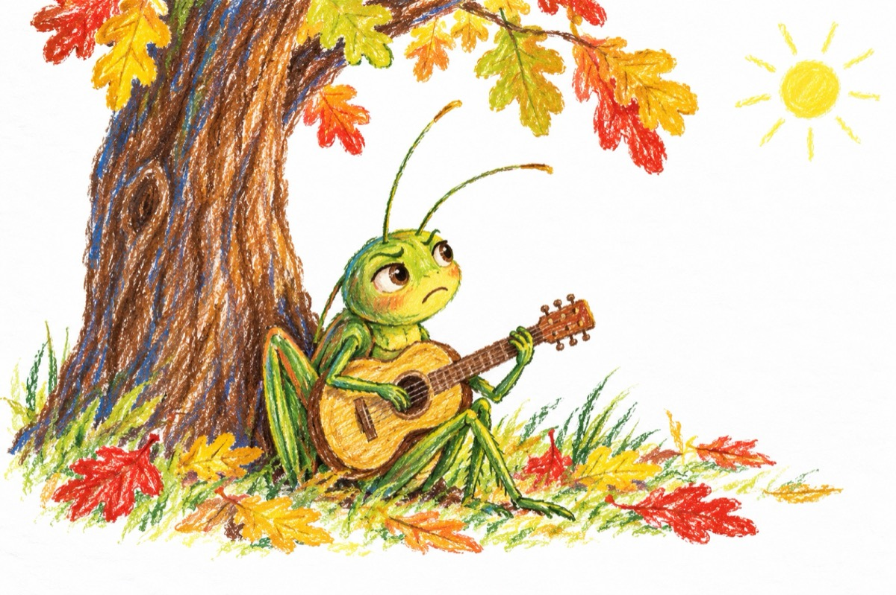
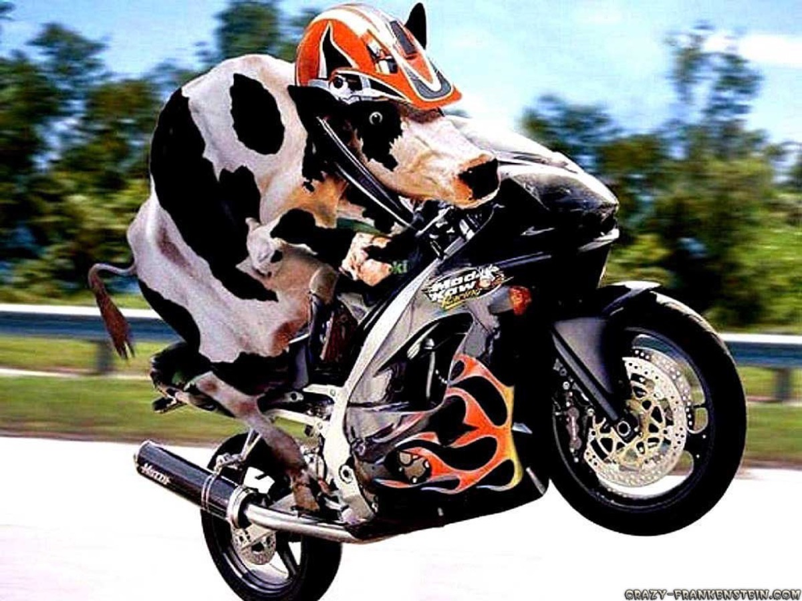

pentru cei mici
Copile
Copile sau Cartea copiilor
Antologie de poezii pentru copii, în varianta de tipar din 18 martie 2015 (data fișierului sursă). Poeziile păstrate aici au date între 2005 și 2009; volumul se încheie cu „Nepoțica mea”, semnată împreună cu Elena Boncea.
· 63 de texte
Deschide cartea la prima poezie →
Păstreaz-o: PDF, de tipărit (1.4 MB) · EPUB, pentru cititoare (0.8 MB)
Cuprins
- Copile
 De ziua mamei26 ianuarie 2009
De ziua mamei26 ianuarie 2009 La grădiniță6 octombrie 2009
La grădiniță6 octombrie 2009 Bunicuța1 februarie 2008
Bunicuța1 februarie 2008 Prințesa9 august 2008
Prințesa9 august 2008 Dialog iernos4 ianuarie 2008
Dialog iernos4 ianuarie 2008 Povață23 august 2008
Povață23 august 2008 Cowboyul8 octombrie 2008
Cowboyul8 octombrie 2008 Papagalul motănel12 noiembrie 2008
Papagalul motănel12 noiembrie 2008
Supărarea lui Cri10 martie 2009- Cuib de barză24 aprilie 2008
- Bârfitoarele6 mai 2007
- Când dă uliul22 septembrie 2007
- Profesoara fără ceas
- Apolodor10 septembrie 2005
- Nătăfleață8 ianuarie 2006
 E primăvară
E primăvară- Marea gală
- Dac-ai ști
- Cum să scăpăm de dușman
- După faptă și răsplată
- Toamna14 noiembrie 2005
- Fomilă și Setilă6 ianuarie 2006
- Ceasul cu cuc4 decembrie 2005
- Ceasul de aur4 decembrie 2005
- Ceasul rău
- Ceasul nimănui9 decembrie 2005
- Ceasul de buzunar2 ianuarie 2006
- Nătăfleață dis-de-dimineață9 ianuarie 2006
- Mascota21 ianuarie 2006
- Înc-un ceas a mai rămas8 decembrie 2005
 Învățare de minte14 noiembrie 2005
Învățare de minte14 noiembrie 2005- Bursucul de sub alun13 august 2005
 Concurs26 august 2005
Concurs26 august 2005- Tropa tropa29 august 2005
- Bondarul și gărgărița2 septembrie 2005

Taurul11 septembrie 2005- Nunta12 septembrie 2005
- Pleacă15 septembrie 2005
- De învățătură
- Calul nărăvaș15 octombrie 2005
- Spre Africa5 mai 2006
- Șoricelul mincinos6 decembrie 2006
- Câinele maidanez5 februarie 2007
- Cioroiul și coțofana4 februarie 2007
- Broscoiul Liliput18 decembrie 2005
- Pițigoiul și albina25 aprilie 2008
- Sunt micuț cine-i de vină24 iulie 2008
- Un cal nebun15 mai 2008
- Papagalul Coco
- Mi s-a rupt cureaua la ceas4 decembrie 2005
- Oscar26 iulie 2008
- Cocostârc și Cocostârca
- Bravul iepuraș
- Sanitarul lacului
- Tinda cu șoricei
- Analfabetul10 august 2007
- Marele meci28 august 2006
- Cocoșul american29 iulie 2007
- Pățania lui Gigel19 ianuarie 2008
- Iepurașul deghizat16 ianuarie 2008
- Pe plajă27 iulie 2008
- Copilăria este-n noi de-a pururi